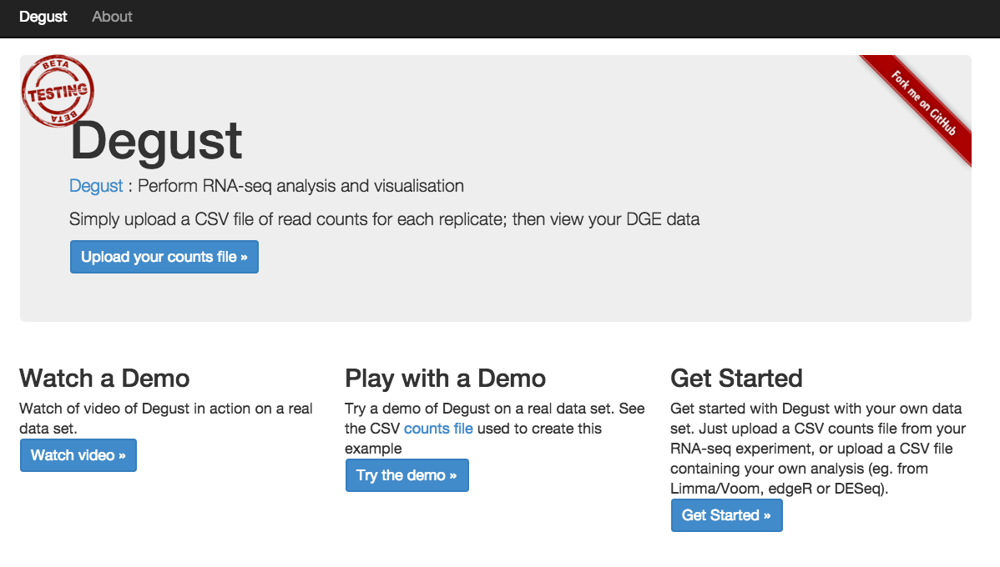

RNA-Seq Differential Gene Expression: Advanced Tutorial¶
Authors: Mahtab Mirmomeni, Andrew Lonie, Jessica Chung
Tutorial Overview¶
In this tutorial we compare the performance of three statistically-based expression analysis tools:
- CuffDiff
- EdgeR
- DESeq2
This tutorial builds on top of the basic RNA-seq DGE tutorial. It is recommended to have some familiarity of RNA-seq before beginning this tutorial.
Background [15 min]¶
Where does the data in this tutorial come from?¶
The data for this tutorial is from the paper, A comprehensive comparison of RNA-Seq-based transcriptome analysis from reads to differential gene expression and cross-comparison with microarrays: a case study in Saccharomyces cerevisiae by Nookaew et al. [1] which studies S.cerevisiae strain CEN.PK 113-7D (yeast) under two different metabolic conditions: glucose-excess (batch) or glucose-limited (chemostat).
The RNA-Seq data has been uploaded in NCBI, short read archive (SRA), with accession SRS307298. There are 6 samples in total– two treatments with three biological replicates each. The data is paired-end.
We have extracted chromosome I reads from the samples to make the tutorial a suitable length. This has implications, as discussed in section 8.
Section 1: Preparation [15 min]¶
1. Register as a new user in Galaxy if you don’t already have an account¶
- Open a browser and go to a Galaxy server. For example, you could use Galaxy Australia. Recommended browsers include Firefox and Chrome. Internet Explorer is not supported.
- Register as a new user by clicking User > Register on the top dark-grey bar. Alternatively, if you already have an account, login by clicking User > Login.
2. Import the RNA-seq data for the workshop.¶
If you are using Galaxy Australia, go to Shared Data > Data Libraries in the top toolbar, and select Galaxy Australia Training Material: RNA-Seq: Yeast RNA-Seq. Select (tick) all of the files and click To History, and choose as Datasets, then Import.
Alternatively, if you are using your own personal Galaxy server or a different Galaxy server, you can import the data like this:
- In the tool panel located on the left, under Basic Tools select Get Data > Upload File. Click on the Paste/Fetch data button on the bottom section of the pop-up window.
- Upload the sequence data by pasting the following links into the text
input area.
These six files are three paired-end samples from the batch condition
(glucose-excess). Make sure the type is specified as ‘fastqsanger’
when uploading.
https://swift.rc.nectar.org.au:8888/v1/AUTH_a3929895f9e94089ad042c9900e1ee82/RNAseqDGE_ADVNCD/batch1_chrI_1.fastqThese six files are three paired-end samples from the chem condition (glucose-limited). Make sure the type is specified as ‘fastqsanger’ when uploading.
https://swift.rc.nectar.org.au:8888/v1/AUTH_a3929895f9e94089ad042c9900e1ee82/RNAseqDGE_ADVNCD/batch1_chrI_2.fastq
https://swift.rc.nectar.org.au:8888/v1/AUTH_a3929895f9e94089ad042c9900e1ee82/RNAseqDGE_ADVNCD/batch2_chrI_1.fastq
https://swift.rc.nectar.org.au:8888/v1/AUTH_a3929895f9e94089ad042c9900e1ee82/RNAseqDGE_ADVNCD/batch2_chrI_2.fastq
https://swift.rc.nectar.org.au:8888/v1/AUTH_a3929895f9e94089ad042c9900e1ee82/RNAseqDGE_ADVNCD/batch3_chrI_1.fastq
https://swift.rc.nectar.org.au:8888/v1/AUTH_a3929895f9e94089ad042c9900e1ee82/RNAseqDGE_ADVNCD/batch3_chrI_2.fastq
https://swift.rc.nectar.org.au:8888/v1/AUTH_a3929895f9e94089ad042c9900e1ee82/RNAseqDGE_ADVNCD/chem1_chrI_1.fastqThen, upload this file of gene definitions. You don’t need to specify the type for this file as Galaxy will auto-detect the file as a GTF file.
https://swift.rc.nectar.org.au:8888/v1/AUTH_a3929895f9e94089ad042c9900e1ee82/RNAseqDGE_ADVNCD/chem1_chrI_2.fastq
https://swift.rc.nectar.org.au:8888/v1/AUTH_a3929895f9e94089ad042c9900e1ee82/RNAseqDGE_ADVNCD/chem2_chrI_1.fastq
https://swift.rc.nectar.org.au:8888/v1/AUTH_a3929895f9e94089ad042c9900e1ee82/RNAseqDGE_ADVNCD/chem2_chrI_2.fastq
https://swift.rc.nectar.org.au:8888/v1/AUTH_a3929895f9e94089ad042c9900e1ee82/RNAseqDGE_ADVNCD/chem3_chrI_1.fastq
https://swift.rc.nectar.org.au:8888/v1/AUTH_a3929895f9e94089ad042c9900e1ee82/RNAseqDGE_ADVNCD/chem3_chrI_2.fastq
-
You should now have these 13 files in your history:
- batch1_chrI_1.fastq
- batch1_chrI_2.fastq
- batch2_chrI_1.fastq
- batch2_chrI_2.fastq
- batch3_chrI_1.fastq
- batch3_chrI_2.fastq
- chem1_chrI_1.fastq
- chem1_chrI_2.fastq
- chem2_chrI_1.fastq
- chem2_chrI_2.fastq
- chem3_chrI_1.fastq
- chem3_chrI_2.fastq
- genes.gtf
These files can be renamed by clicking the pen icon if you wish.
Note: The reads are paired end; for example batch1_chrI_1.fastq and batch1_chrI_2.fastq are paired reads from one sequencing run. Low quality reads have already been trimmed.
Convert the GTF to a GFF file¶
This is needed for downstream analysis.
In the tools panel, search for “GTF” and click on “GTF-to-GFF converter”.
Select the GTF file and click “Execute”.
Section 2: Alignment [30 mins]¶
In this section we map the reads in our FASTQ files to a reference genome. As these reads originate from mRNA, we expect some of them will cross exon/intron boundaries when we align them to the reference genome. Tophat is a splice-aware mapper for RNA-seq reads that is based on Bowtie. It uses the mapping results from Bowtie to identify splice junctions between exons. More information on Tophat can be found here.
1. Map/align the reads with Tophat to the S. cerevisiae reference¶
In the left tool panel menu, under NGS Analysis, select NGS: RNA Analysis > Tophat and set the parameters as follows:
- Is this single-end or paired-end data? Paired-end (as individual datasets)
-
RNA-Seq FASTQ file, forward reads:
(Click on the multiple datasets icon and select all six of the forward FASTQ files ending in *1.fastq. This should be correspond to every second file (1,3,5,7,9,11). This can be done by holding down the ctrl key (Windows) or the command key (OSX) to select multiple files.)- batch1_chrI_1.fastq
- batch2_chrI_1.fastq
- batch3_chrI_1.fastq
- chem1_chrI_1.fastq
- chem2_chrI_1.fastq
- chem3_chrI_1.fastq
-
RNA-Seq FASTQ file, reverse reads:
(Click on the multiple datasets icon and select all six of the reverse FASTQ files ending in *2.fastq.)- batch1_chrI_2.fastq
- batch2_chrI_2.fastq
- batch3_chrI_2.fastq
- chem1_chrI_2.fastq
- chem2_chrI_2.fastq
- chem3_chrI_2.fastq
- Use a built in reference genome or own from your history: Use built-in genome
- Select a reference genome: S. cerevisiae June 2008 (SGD/SacCer2) (sacCer2)
- Use defaults for the other fields
- Execute
Note: This may take a few minutes, depending on how busy the server is.
2. Rename the output files¶
You should have 5 output files for each of the FASTQ input files:
- Tophat on data 2 and data 1: accepted_hits: This is a BAM file containing sequence alignment data of the reads. This file contains the location of where the reads mapped to in the reference genome. We will examine this file more closely in the next step.
- Tophat on data 2 and data 1: splice junctions: This file lists all the places where TopHat had to split a read into two pieces to span an exon junction.
- Tophat on data 2 and data 1 deletions and Tophat on data 2 and data 1: insertions: These files list small insertions or deletions found in the reads. Since we are working with synthetic reads we can ignore Tophat for Illumina data 1:insertions Tophat for Illumina data 1:deletions for now.
- Tophat on data 2 and data 1: align_summary: This file gives some mapping statistics including the number of reads mapped and the mapping rate.
You should have a total of 30 Tophat output files in your history.
Rename the 6 accepted_hits files into a more meaningful name (e.g. ‘Tophat on data 2 and data 1: accepted_hits’ to ‘batch1-accepted_hits.bam’) by using the pen icon next to the file.
3. Visualise the aligned reads with JBrowse¶
In the tool panel search bar, search for “JBrowse” and click on it.
- For “Reference genome to display”: Use a built-in genome
- “Select a reference genome”: Yeast: sacCer2
- “Genetic Code”: 1. The Standard Code
Set up a track for the mapped reads:
- Insert Track Group
- Insert Annotation Track
- Track Type: Bam Pileups
- Select two bam files, one from each condition, e.g. batch1_acceptedhits.bam and chem1_acceptedhits.bam
Set up a track for the annotations:
- Insert Track Group
- Insert Annotation Track
-
Select the GFF file (that we converted from the GTF file earlier on)
-
Execute
When the file is ready, click the eye icon.
- Select chr1 in the drop down box.
- Tick all the track names in the left hand side.
- Zoom in and out with the plus and minus buttons.
- Go to position 87500 to see a splice junction.
Section 3. Cuffdiff [40 min]¶
The aim in this section is to statistically test for differential expression using Cuffdiff and obtain a list of significant genes.
1. Run Cuffdiff to identify differentially expressed genes and transcripts¶
In the left tool panel menu, under NGS Analysis, select NGS: RNA Analysis > Cuffdiff and set the parameters as follows:
- Transcripts: genes.gtf
- Condition:
- 1: Condition
- name batch
- Replicates:
- batch1-accepted_hits.bam
- batch2-accepted_hits.bam
- batch3-accepted_hits.bam
(Multiple datasets can be selected by holding down the shift key or the ctrl key (Windows) or the command key (OSX).)
- 2: Condition
- name chem
- Replicates:
- chem1-accepted_hits.bam
- chem2-accepted_hits.bam
- chem3-accepted_hits.bam
- 1: Condition
- Use defaults for the other fields
- Execute
Note: This step may take a while, depending on how busy the server is.
2. Explore the Cuffdiff output files¶
There should be 11 output files from Cuffdiff. These files should all begin with something like “Cuffdiff on data 43, data 38, and others”. We’ll mostly be interested in the file ending with ‘gene differential expression testing’ which contains the statistical results from testing the level of gene expression between the batch condition and chem condition.
Filter based on column 14 (‘significant’) - a binary assessment of q_value > 0.05, where q_value is p_value adjusted for multiple testing. Under Basic Tools, click on Filter and Sort > Filter:
- Filter: “Cuffdiff on data....: gene differential expression testing”
- With following condition: c14==’yes’
- Execute
This will keep only those entries that Cuffdiff has marked as significantly differentially expressed. There should be 53 differentially expressed genes in this list.
We can rename this file by clicking on the pencil icon of the outputted file and change the name from “Filter on data x” to “Cuffdiff_Significant_DE_Genes”.
Section 4. Count reads in features [30 min]¶
HTSeq-count creates a count matrix using the number of the reads from each bam file that map to the genomic features in the genes.gtf. For each feature (a gene for example) a count matrix shows how many reads were mapped to this feature.
-
Use HTSeq-count to count the number of reads for each feature.
In the left tool panel menu search bar, search for “count matrix”. Click on SAM/BAM to count matrix and set the parameters as follows:- Gene model (GFF) file to count reads over from your current history: genes.gtf
- bam/sam file from your history:
(Select all six bam files using the shift key.)- batch1-accepted_hits.bam
- batch2-accepted_hits.bam
- batch3-accepted_hits.bam
- chem1-accepted_hits.bam
- chem2-accepted_hits.bam
- chem3-accepted_hits.bam
- Use defaults for the other fields
- Execute
-
Examine the outputted matrix by using the eye icon.
Each column corresponds to a sample and each row corresponds to a gene. By sight, see if you can find a gene you think is differentially expressed from looking at the counts.
We now have a count matrix, with a count against each corresponding sample. We will use this matrix in later sections to calculate the differentially expressed genes.
Section 5: edgeR [30 min]¶
edgeR is an R package, that is used for analysing differential expression of RNA-Seq data and can either use exact statistical methods or generalised linear models.
1. Generate a list of differentially expressed genes using edgeR¶
In the Galaxy tool panel, under NGS Analysis, select NGS: RNA > Differential_Count and set the parameters as follows:
- Select an input matrix - rows are contigs, columns are counts for each sample: bams to DGE count matrix_htseqsams2mx.xls
- Title for job outputs: Differential_Counts_edgeR
- Treatment Name: Batch
- Select columns containing treatment:
- batch1-accepted_hits.bam
- batch2-accepted_hits.bam
- batch3-accepted_hits.bam
- Control Name: Chem
- Select columns containing control:
- chem1-accepted_hits.bam
- chem2-accepted_hits.bam
- chem3-accepted_hits.bam
- Run this model using edgeR: Run edgeR
- Use defaults for the other fields
- Execute
2. Examine the outputs from the previous step¶
- Examine the Differential_Counts_edgeR_topTable_edgeR.xls file by clicking on the eye icon. This file is a list of genes sorted by p-value from using EdgeR to perform differential expression analysis.
- Examine the Differential_Counts_edgeR.html file. This file has some
output logs and plots from running edgeR. If you are familiar with R,
you can examine the R code used for analysis by scrolling to the bottom
of the file, and clicking Differential_Counts.Rscript to download the
Rscript file.
If you are curious about the statistical methods edgeR uses, you can read the edgeR user’s guide at Bioconductor.
3. Extract the significant differentially expressed genes.¶
Under Basic Tools, click on Filter and Sort > Filter:
- Filter: “Differential_Counts_edgeR_topTable_edgeR.xls”
- With following condition: c6 <= 0.05
- Execute
This will keep the genes that have an adjusted p-value of less or equal to 0.05. There should be 55 genes in this file. Rename this file by clicking on the pencil icon of and change the name from “Filter on data x” to “edgeR_Significant_DE_Genes”.
Section 6. DESeq2 [30 min]¶
DESeq2 is an R package that uses a negative binomial statistical model to find differentially expressed genes. It can work without replicates (unlike edgeR) but the author strongly advises against this for reasons of statistical validity.
1. Generate a list of differentially expressed genes using DESeq2¶
In the Galaxy tool panel, under NGS Analysis, select NGS: RNA Analysis > Differential_Count and set the parameters as follows:
- Select an input matrix - rows are contigs, columns are counts for each sample: bams to DGE count matrix_htseqsams2mx.xls
- Title for job outputs: Differential_Counts_DESeq2
- Treatment Name: Batch
- Select columns containing treatment:
- batch1-accepted_hits.bam
- batch2-accepted_hits.bam
- batch3-accepted_hits.bam
- Control Name: Chem
- Select columns containing control:
- chem1-accepted_hits.bam
- chem2-accepted_hits.bam
- chem3-accepted_hits.bam
- Run this model using edgeR: Do not run edgeR
- Run the same model with DESeq2 and compare findings: Run DESeq2
2. Examine the outputs the previous step¶
- Examine the Differential_Counts_DESeq2_topTable_DESeq2.xls file. This file is a list of genes sorted by p-value from using DESeq2 to perform differential expression analysis.
- Examine the Differential_Counts_DESeq2.html file. This file has some output logs and plots from running DESeq2. Take a look at the PCA plot.
PCA plots are useful for exploratory data analysis. Samples which are more similar to each other are expected to cluster together. A count matrix often has thousands of dimensions (one for each feature) and our PCA plot generated in the previous step transforms the data so the most variability is represented in principal components 1 and 2 (PC1 and PC2 represented by the x-axis and y-axis respectively).
Take note of the scales on the x-axis and the y-axis. The x-axis representing the first principal component accounts for 96% of the variance and ranges from approximately -6 to +6, while the y-axis ranges from approximately -1 to +1.
For both conditions, the 3 replicates tend to be closer to each other than they are to replicates from the other condition.
Additionally, within conditions, the lower glucose (chem) condition shows more variability between replicates than the higher glucose (batch) condition.
3. Filter out the significant differentially expressed genes.¶
Under Basic Tools, click on Filter and Sort > Filter:
- Filter: “Differential_Counts_DESeq2_topTable_DESeq2.xls”
- With following condition: c7 <= 0.05
- Execute
This will keep the genes that have an adjusted p-value of less or equal to 0.05. There should be 53 genes in this file. Rename this file by clicking on the pencil icon of and change the name from “Filter on data x” to “DESeq2_Significant_DE_Genes”. You should see the first few differentially expressed genes are similar to the ones identified by EdgeR.
Section 7: How much concordance is there between methods?¶
We are interested in how similar the identified genes are between the different statistial methods used by Cuffdiff, edgeR, and DESeq2. We can generate a Venn diagram to visualise the amount of overlap.
-
Generate a Venn diagram of the output of the 3 differential expression tools.
Note that column index 2 (or c3) contains the gene name in the CuffDiff output. Similarly column index 0 (or c1) in EdgeR and DESeq2 contain the gene names.
In the Galaxy tool panel, under Statistics and Visualisation, select Graph/Display Data > proportional venn and set the parameters as follows:- title: Common genes
- input file 1: Cuffdiff_Significant_DE_Genes
- column index: 2
- as name: Cuffdiff
- input file 2: edgeR_Significant_DE_Genes
- column index file 2: 0
- as name file 2: edgeR
- two or three: three
- input file 3: DESeq2_Significant_DE_Genes
- column index file 3: 0
- as name file 3: DESeq2
- Execute
-
View the generated Venn diagram. Agreement between the tools is good: there are 49 differentially expressed genes that all three tools agree upon, and only a handful that are exclusive to each tool.
-
Generate the common list of significantly expressed genes identified by the three mentioned tools by extracting the respective gene list columns and intersecting:
-
Under Basic Tools in the Galaxy tool panel, select Text Manipulation > cut
- Cut columns: c3
- Delimited by: Tab
- From: Cuffdiff_Significant_DE_Genes
- Execute
Rename the output to something like ‘Cuffdiff_gene_list’
-
Select Text Manipulation > cut
- Cut columns: c1
- Delimited by: Tab
- From: edgeR_Significant_DE_Genes
- Execute
Rename the output to something like ‘edgeR_gene_list’
-
Select Text Manipulation > cut
- Cut columns: c1
- Delimited by: Tab
- From: DESeq2_Significant_DE_Genes
- Execute
Rename the output to something like ‘DESeq2_gene_list’
-
Under Basic Tools in the Galaxy tool panel, select Join, Subtract and Group > Compare two Datasets
- Compare: Cuffdiff_gene_list
- against: edgeR_gene_list
- Use defaults for the other fields
- Execute
Rename the output to something like ‘Cuffdiff_edgeR_common_gene_list’
-
Select Join, Subtract and Group > Compare two Datasets
- Compare: Cuffdiff_edgeR_common_gene_list
- against: DESeq2_gene_list
- Use defaults for the other fields
- Execute
Rename the output to something like ‘Cuffdiff_edgeR_DESeq2_common_gene_list’
-
We now have a list of 49 genes that have been identified as significantly differentially expressed by all three tools.
Section 8: Gene set enrichment analysis¶
The biological question being asked in the original paper is essentially:
“What is the global response of the yeast transcriptome in the shift from
growth at glucose excess conditions (batch) to glucose-limited conditions
(chemostat)?”
We can address this question by attempting to interpret our differentially expressed gene list at a higher level, perhaps by examining the categories of gene and protein networks that change in response to glucose.
For example, we can input our list of differentially expressed genes to a Gene Ontology (GO) enrichment analysis tool such as GOrilla to find out the GO enriched terms.
NOTE: Because of time-constraints in this tutorial, the analysis was confined to a single chromosome (chromosome I) and as a consequence we don’t have sufficient information to look for groups of differentially expressed genes (simply because we don’t have enough genes identified from the one chromosome to look for statistically convincing over-representation of any particular gene group).
-
Download the list of genes here in a plain-text file to your local computer by right clicking on the link and selecting Save Link As…
Note that there are ~2500 significantly differentially expressed genes identified in the full analysis. Also note that the genes are ranked in order of statistical significance. This is critical for the next step.
-
Explore the data using gene set enrichment analysis (GSEA) using the online tool GOrilla
- Go to cbl-gorilla.cs.technion.ac.il
- Choose Organism: Saccharomyces cerevisiae
- Choose running mode: Single ranked list of genes
- Open the gene list you downloaded in the previous step in a text editor. Select the full list, then copy and paste the list into the text box.
- Choose an Ontology: Process
- Search Enriched GO terms
-
Once the analysis has finished running, you will be redirected to a page depicting the GO enriched biological processes and its significance (indicated by colour), based on the genes you listed.
Scroll down to view a table of GO terms and their significance scores. In the last column, you can toggle the [+] Show genes to see the list of associated genes.
-
Experiment with different ontology categories (Function, Component) in GOrilla.
- Go to cbl-gorilla.cs.technion.ac.il
At this stage you are interpreting the experiment in different ways, potentially discovering information that will lead you to further lab experiments. This is driven by your biological knowledge of the problem space. There are an unlimited number of methods for further interpretation of which GSEA is just one.
Optional extension: Degust¶
Degust is an interactive visualiser for analysing RNA-seq data. It runs as a web service and can be found at vicbioinformatics.com/degust/.

1. Load count data into Degust¶
- In Galaxy, download the count data “bams to DGE count matrix_htseqsams2mx.xls” generated in Section 4 using the disk icon.
- Go to http://degust.erc.monash.edu/ and click on “Upload your counts file”.
- Click “Choose file” and upload the recently downloaded Galaxy tabular file containing your RNA-seq counts.
2. Configure your uploaded data¶
- Give your visualisation a name.
- For the Info column, select Contig.
- Add two conditions: batch and chem. For each condition, select the three samples which correspond with the condition.
- Click Save changes and view your data.
3. Explore your data¶
Read through the Degust tour of features. Explore the parallel coordinates plot, MA plot, MDS plot, heatmap and gene list. Each is fully interactive and influences other portions on the display depending on what is selected.
On the right side of the page is an options module which can set thresholds to filter genes using statistical significance or absolute-fold-change.
On the left side is a dropdown box you can specify the method (Voom/Limma or edgeR) used to perform differential expression analysis on the data. You can also view the R code by clicking “Show R code” under the options module on the right.
4. Explore the demo data¶
Degust also provides an example dataset with 4 conditions and more genes. You can play with the demo dataset by clicking on the “Try the demo” button on the Degust homepage. The demo dataset includes a column with an EC number for each gene. This means genes can be displayed on Kegg pathways using the module on the right.
References¶
[1] Nookaew I, Papini M, Pornputtpong N, Scalcinati G, Fagerberg L, Uhlén M, Nielsen J: A comprehensive comparison of RNA-Seq-based transcriptome analysis from reads to differential gene expression and cross-comparison with microarrays: a case study in Saccharomyces cerevisiae. Nucleic Acids Res 2012, 40 (20):10084 – 10097. doi:10.1093/nar/gks804. Epub 2012 Sep 10